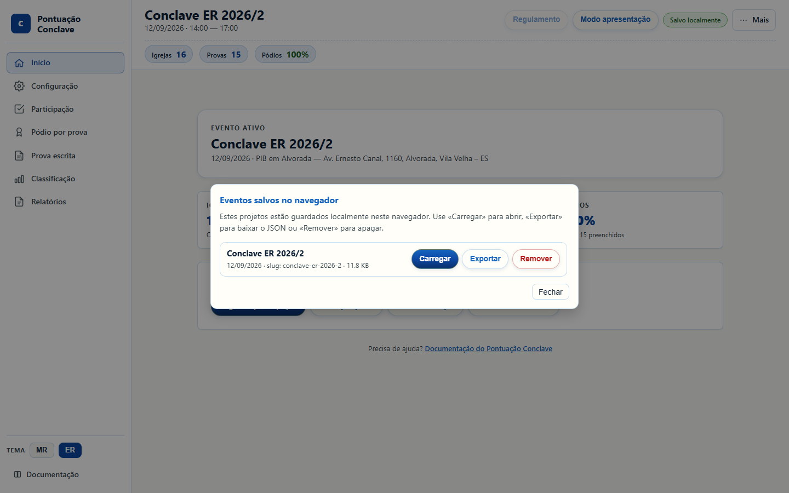
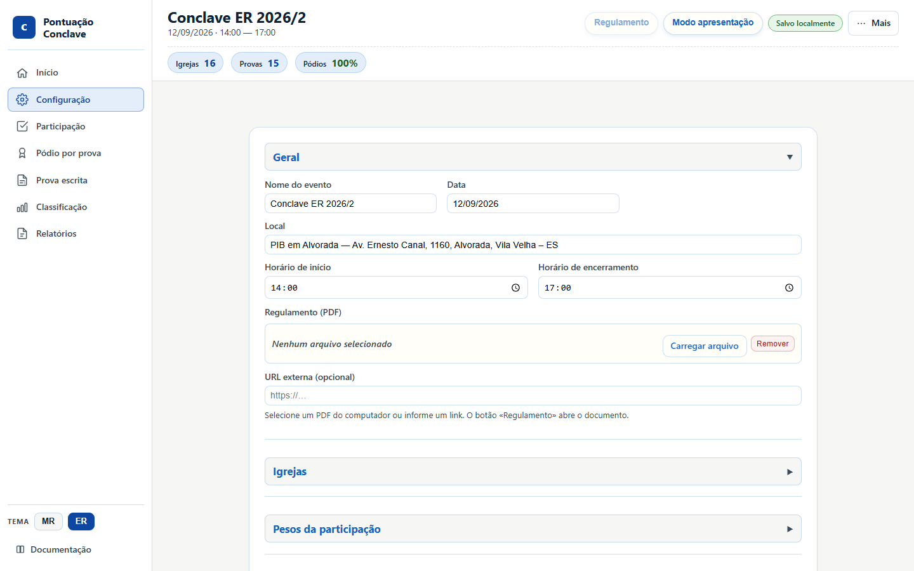
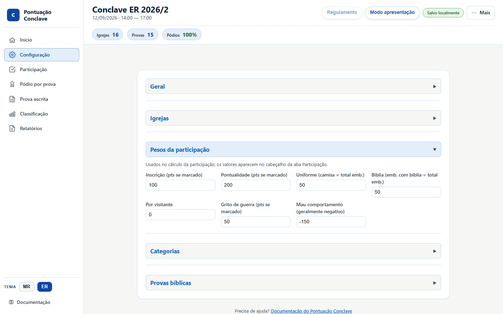
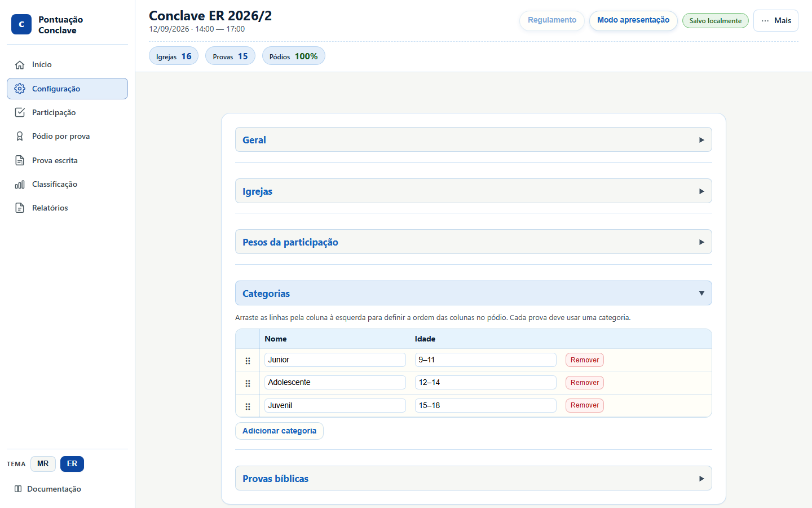
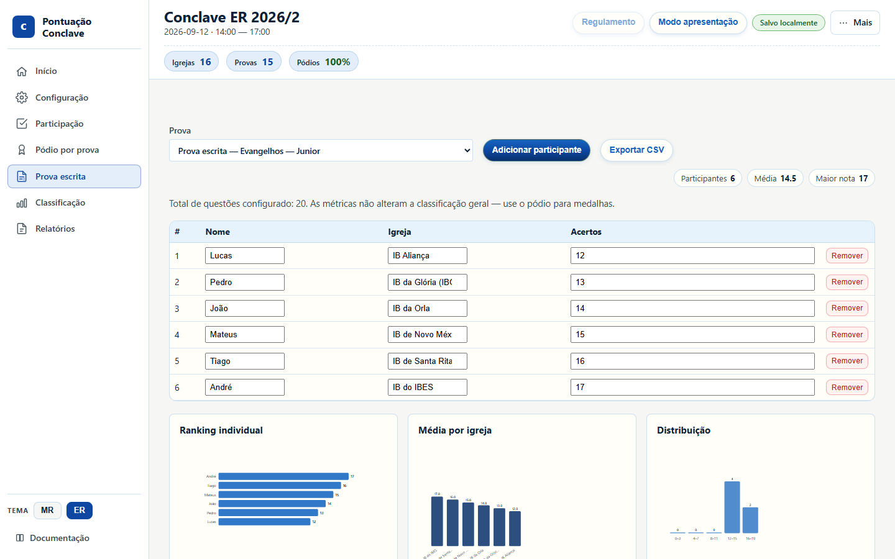
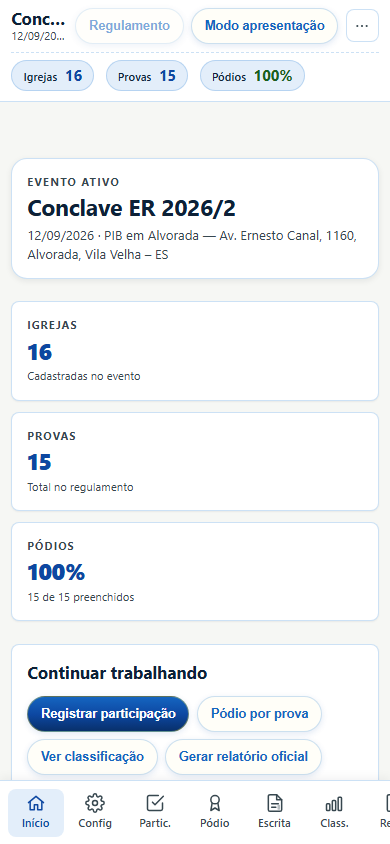

Tour ilustrado de todas as telas do app, com capturas geradas pelo Playwright a partir do evento Conclave ER 2026/2. Os números nas telas são de demonstração — no dia do evento você lança os dados reais.
Para aprender o fluxo em 5 minutos, use o tutorial rápido.
Para regenerar as imagens:
npm run guia:visual
npm run build:docsSumário
- Início (dashboard)
- Menu Mais
- Eventos salvos
- Configuração
- Participação
- Pódio por prova
- Prova escrita
- Esgrima
- Classificação
- Relatórios
- Modo apresentação
- Celular
Início (dashboard)
Primeira aba. Mostra o evento ativo (nome, data, local), atalhos para Participação, Pódio, Classificação e Relatório, e a lista de projetos guardados neste navegador.

A sidebar (à esquerda no desktop) lista as oito abas, o seletor de tema MR / ER (só troca as cores) e o link da documentação.
Menu Mais
No canto superior direito. Agrupa carregar/exportar evento e projeto, novo evento, eventos salvos e limpar dados. Modo apresentação e Regulamento ficam na topbar, fora deste menu.

- Carregar evento — só a configuração (
.evento.json). - Carregar projeto — configuração + dados lançados (
.projeto.json). - Exportar evento / projeto — backup. Exporte o projeto cedo no dia do evento.
- Limpar dados — zera participação e pódio, mantém igrejas e provas.
Eventos salvos
Projetos neste navegador (localStorage). Dá para carregar, exportar ou remover. O Conclave MR 2026/1 pode aparecer aqui se você já o usou — no dia do ER, deixe o Conclave ER 2026/2 como evento ativo.

Configuração
Cadastro do evento. Seções recolhíveis: Geral, Igrejas, Pesos, Categorias e Provas.
Geral
Nome, data, local, horários e PDF do regulamento (botão Regulamento na topbar).

Igrejas
Uma linha por igreja. Dá para adicionar em lote (um nome por linha). Remover uma igreja apaga a linha na Participação e as medalhas dela no pódio.

Pesos e medalhas
No ER 2026/2: inscrição 100, pontualidade 200, uniforme/bíblia 50, grito de guerra 50, mau comportamento −150, visitantes 0. Medalhas 300 / 200 / 100. Não clique no tema ER para “aplicar preset” — o tema agora é só visual.

Categorias
Faixas etárias do regulamento. No ER 2026/2: Junior 9–11, Adolescente 12–14 e Juvenil 15–18. Cada prova é lançada por categoria.

Provas
15 provas (Evangelhos, Organização, Montagem, Esgrima e Debate × Junior / Adolescente / Juvenil). Tipo escrita (Evangelhos, Organização e Montagem) alimenta a aba Prova escrita; tipo oral (Esgrima e Debate) só entra no pódio.

Participação
Uma linha por igreja. No tema ER as colunas são:
- Inscr. — inscrição até o prazo (100 pts).
- Pont. — pontualidade no evento (200 pts).
- Presentes / Camisa / Bíblia — uniforme e Bíblia só pontuam se a contagem for igual ao total de presentes. Não inclua visitantes nesses números.
- Grito — grito de guerra (50 pts).
- Mau comp. — conversa/saídas (−150 pts naquela igreja).
- Extra — CER no pré-conclave (+100) + pastor presente (+50). Se houver penalidade de conservação do templo, subtraia 100 de todas as igrejas.
Se inscrição estiver desmarcada e Presentes = 0, a linha inteira de participação zera.

Pódio por prova
Ouro, prata e bronze por prova. Digite a igreja (lista automática) e, se quiser, o nome do competidor. Filtros no topo: categoria, busca, avisos, desempate. As medalhas somam na classificação geral.

Prova escrita
Cadastro de acertos por participante nas provas do tipo escrita. Serve para gráficos e CSV. Não altera a classificação — a medalha continua sendo lançada no Pódio. Mínimo do regulamento ER: 12 acertos em 20 (60%) para pontuar medalha.

Esgrima
Sorteio de referências para o líder da Esgrima (Debate Bíblico) ditar, sem repetir na mesma categoria. Cronômetro 20 s (MR) ou 30 s (ER). Não altera a classificação — medalhas continuam no Pódio. Debate de versículos e Esgrima avançada não usam esta aba.
Classificação
Ranking geral: participação + punições + medalhas + extra. Desempate no ER: ouro → prata → Debate de Versículos → Conhecimentos gerais da Organização → nome. A prova de Evangelhos conta medalhas, mas não entra sozinha no critério de desempate. Use Exportar CSV para planilha.

Relatórios
Resumo (capa, top 3, pódio, encerramento) para divulgação. Oficial completo inclui participação, classificação e critérios para arquivo. Gere e use a impressão do navegador (Salvar como PDF).

Modo apresentação
Tela cheia para projetor, com cerimônia de revelação do 5.º ao 1.º lugar. Clique ou use as setas para avançar. Esc sai. A classificação fica congelada até a cerimônia terminar.

Celular
Abaixo de 768 px a navegação vai para a barra inferior. As mesmas oito abas. Prefira um notebook no dia do evento; o celular serve para consulta.

Backup no dia do evento
- Abra o app (tema azul ER, evento ER 2026/2).
- Lance Participação e Pódio.
- Mais → Exportar projeto várias vezes (pen-drive + nuvem).
- Não clique no tema ER esperando mudar pesos — ele só muda as cores.